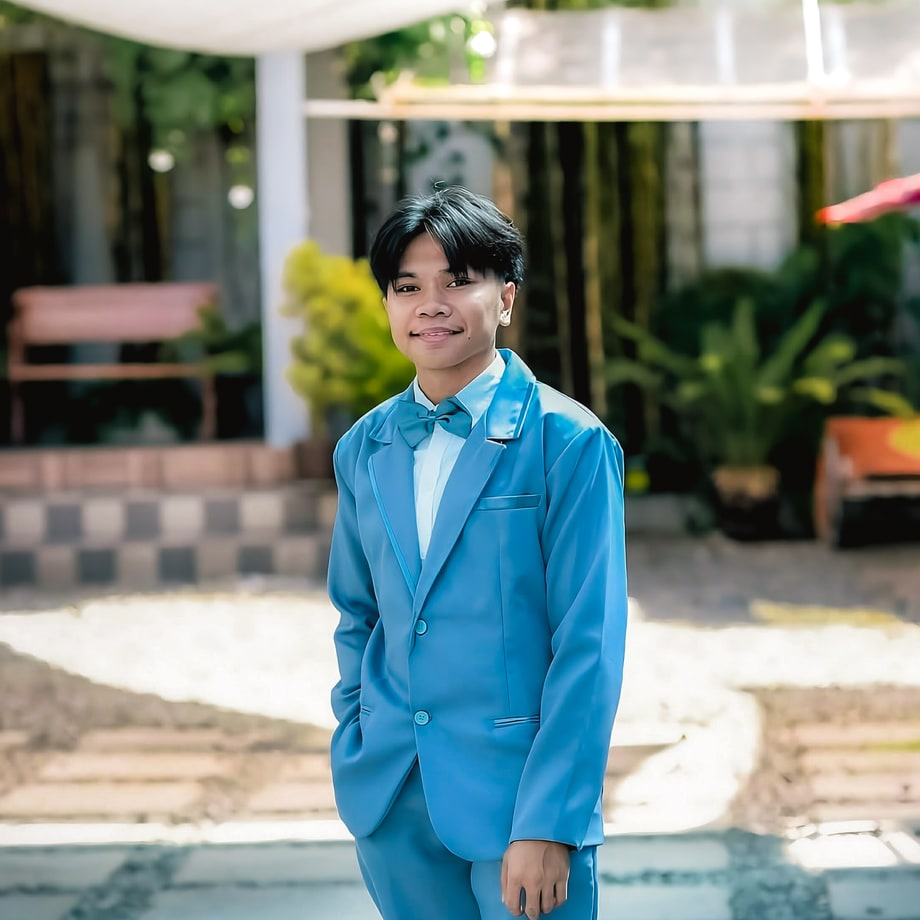

Bio
Hi, I'm Josir. I'm a front-end developer and a photo editor. I build the parts of a website people see and click, and I edit the photos that make it look good. I just finished my BS in Information Technology, and I'm ready for my first role.

Front-End Developer
I turn designs into real web pages.
- Responsive layouts for phones, tablets, and computers
- Clean HTML and CSS
- JavaScript for menus, sliders, forms, and theme toggles
- Fast pages that are easy to use
- PHP and MySQL when a page needs a database
Photo Editor
I make photos look clean and natural.
- Color correction and color grading
- Retouching and cleanup
- Exposure, contrast, and crop fixes
- Sizing and compressing images for the web
Education
BS Information Technology
[School name], [Year]
Focus: front-end web development
Best project: [Project name], [what it does]
Stack
HTML · CSS · JavaScript · PHP · MySQL · [Git]
Creative Toolkit
Photoshop · Lightroom · Figma · Color Grading · Image Optimization
The Advantage
Most developers don't edit photos, and most editors don't code. I do both. I can build a page and make the images for it, so the whole thing looks like it belongs together.
How I Build a Page
- Plan what the visitor needs
- Sketch the layout in Figma
- Write the code
- Test on phone and desktop
- Edit and compress the photos so it loads fast
Projects
- [Website 1]: [what it is, one line] · [link]
- [Website 2]: [what it is, one line] · [link]
- [Photo edit or before/after]: [one line] · [link]
Dossier — Offline Stats
Base: San Pedro, Laguna 🇵🇭
Fuel: Lofi for coding. Soundtracks for editing.
Belief: You don't need fancy gear to make great work.
Learning now: [skill, e.g., React or accessibility]
For fun: [hobby]
Status
OPEN TO WORK
Front-end developer · Photo editor
Full-time, freelance, or internship
[your email] · [GitHub] · [LinkedIn]